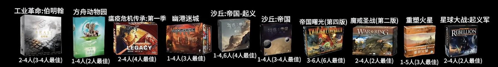
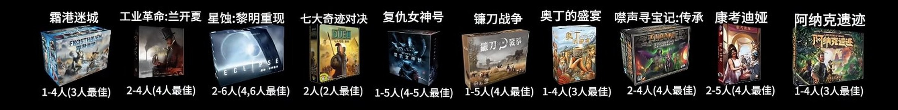

Top 30 逐款对照
BGG 官方 Top 30 是桌游圈被讨论得最多的一段榜单。下面把 BGG 的英文原名与数值和 中文盘点视频里的译名与人数配置并列成一张表，方便两边对照。
截图原件
原图是一段中文盘点视频的画面，标题为 「这30款桌游，就是现代策略桌游的终极天花板！」（截图未显示 UP 主与所在平台）。 它把榜单排成 3 行 × 10 列，左上角是第 1 名，顺序与 BGG 官方排名一致； 每格是「中文译名 + 封面 + 人数配置」，人数配置的写法为 支持人数(最佳人数)。
截图底部的章节条把榜单切成「第 30-21 名 / 第 20-11 名 / 第 10-1 名」三段， 是按从第 30 名倒数到第 1 名的顺序讲解的；画面上则三行同时铺开。
下面是第 1～10 名（第 1 行）：

第 11～20 名（第 2 行）：
第 21～30 名（第 3 行）：

三张竖切图只是把原图裁开并放大 2 倍；未裁切的整图留档在这里： 榜单截图完整原件（1792×828）。

逐款对照表
表里 BGG 名次、年份、评分、票数取自 2026-10-05 的快照； 中文名与人数配置来自截图，照录不改。
| BGG 名次 | 中文名（截图译名） | 英文原名 | 年份 | 平均分 | 贝叶斯均分 | 评价人数 | 人数配置（截图） | BGG id |
|---|---|---|---|---|---|---|---|---|
| 1 | 工业革命:伯明翰 | Brass: Birmingham | 2018 | 8.56 | 8.39 | 60,430 | 2-4 人（3-4 人最佳） | 224517 |
| 2 | 方舟动物园 | Ark Nova | 2021 | 8.54 | 8.36 | 63,369 | 1-4 人（2 人最佳） | 342942 |
| 3 | 瘟疫危机传承:第一季 | Pandemic Legacy: Season 1 | 2015 | 8.50 | 8.34 | 57,884 | 2-4 人（4 人最佳） | 161936 |
| 4 | 幽港迷城 | Gloomhaven | 2017 | 8.53 | 8.29 | 67,808 | 1-4 人（3 人最佳） | 174430 |
| 5 | 沙丘:帝国-起义 | Dune: Imperium – Uprising | 2023 | 8.70 | 8.27 | 20,474 | 1-4、6 人（4 人最佳） | 397598 |
| 6 | 沙丘:帝国 | Dune: Imperium | 2020 | 8.41 | 8.22 | 59,996 | 1-4 人（3-4 人最佳） | 316554 |
| 7 | 帝国曙光(第四版) | Twilight Imperium: Fourth Edition | 2017 | 8.56 | 8.22 | 29,093 | 3-6 人（6 人最佳） | 233078 |
| 8 | 魔戒圣战(第二版) | War of the Ring: Second Edition | 2011 | 8.55 | 8.20 | 25,622 | 2-4 人（2 人最佳） | 115746 |
| 9 | 重塑火星 | Terraforming Mars | 2016 | 8.33 | 8.18 | 115,200 | 1-5 人（3 人最佳） | 167791 |
| 10 | 星球大战:起义军 | Star Wars: Rebellion | 2016 | 8.42 | 8.17 | 36,926 | 2-4 人（2 人最佳） | 187645 |
| 11 | 灵迹岛 | Spirit Island | 2017 | 8.34 | 8.14 | 64,879 | 1-4 人（2 人最佳） | 162886 |
| 12 | 幽港迷城:雄狮蛮颚 | Gloomhaven: Jaws of the Lion | 2020 | 8.35 | 8.09 | 42,058 | 1-4 人（2 人最佳） | 291457 |
| 13 | 盖亚计划 | Gaia Project | 2017 | 8.35 | 8.08 | 31,906 | 1-4 人（3-4 人最佳） | 220308 |
| 14 | 星空觅迹 | SETI: Search for Extraterrestrial Intelligence | 2024 | 8.41 | 8.05 | 22,399 | 1-4 人（3 人最佳） | 418059 |
| 15 | 尖塔奇兵 | Slay the Spire: The Board Game | 2024 | 8.61 | 8.05 | 14,545 | 1-4 人（2 人最佳） | 338960 |
| 16 | 冷热战斗 | Twilight Struggle | 2005 | 8.23 | 8.04 | 52,498 | 2 人（2 人最佳） | 12333 |
| 17 | 勃艮第城堡 | The Castles of Burgundy | 2011 | 8.16 | 8.03 | 70,696 | 2-4 人（2 人最佳） | 84876 |
| 18 | 魔戒:中洲对决 | The Lord of the Rings: Duel for Middle-earth | 2024 | 8.35 | 8.00 | 22,334 | 2 人（2 人最佳） | 421006 |
| 19 | 历史巨轮 | Through the Ages: A New Story of Civilization | 2015 | 8.24 | 8.00 | 35,212 | 2-4 人（3 人最佳） | 182028 |
| 20 | 霜港迷城 | Frosthaven | 2022 | 8.72 | 7.97 | 10,588 | 1-4 人（3 人最佳） | 295770 |
| 21 | 大西部之路 | Great Western Trail | 2016 | 8.14 | 7.96 | 44,194 | 2-4 人（3 人最佳） | 193738 |
| 22 | 工业革命:兰开夏 | Brass: Lancashire | 2007 | 8.20 | 7.96 | 27,789 | 2-4 人（4 人最佳） | 28720 |
| 23 | 星蚀:黎明重现 | Eclipse: Second Dawn for the Galaxy | 2020 | 8.38 | 7.96 | 17,936 | 2-6 人（4、6 人最佳） | 246900 |
| 24 | 七大奇迹:对决 | 7 Wonders Duel | 2015 | 8.07 | 7.95 | 110,804 | 2 人（2 人最佳） | 173346 |
| 25 | 复仇女神号 | Nemesis | 2018 | 8.24 | 7.95 | 38,379 | 1-5 人（4-5 人最佳） | 167355 |
| 26 | 奥丁的盛宴 | A Feast for Odin | 2016 | 8.16 | 7.94 | 34,242 | 1-4 人（3 人最佳） | 177736 |
| 27 | 镰刀战争 | Scythe | 2016 | 8.09 | 7.94 | 94,768 | 1-5 人（4 人最佳） | 169786 |
| 28 | 禁声寻宝记:传承 | Clank! Legacy: Acquisitions Incorporated | 2019 | 8.48 | 7.93 | 11,595 | 2-4 人（4 人最佳） | 266507 |
| 29 | 康考迪娅 | Concordia | 2013 | 8.07 | 7.92 | 46,469 | 2-5 人（4 人最佳） | 124361 |
| 30 | 阿纳克遗迹 | Lost Ruins of Arnak | 2020 | 8.08 | 7.92 | 59,033 | 1-4 人（3 人最佳） | 312484 |
两版名次对不上的 10 款
截图出自视频制作时点，与 2026-10-05 的快照相比，Top 30 里有 10 款的名次变过 （其余 20 款完全一致）。变动的都是相邻的一两位，符合「新游戏往上挤、老游戏缓慢下滑」 的常态：
| 游戏 | 截图中的位次 | 2026-10-05 的名次 | 变化 |
|---|---|---|---|
| 冷热战斗 Twilight Struggle | 14 | 16 | 下滑 2 |
| 勃艮第城堡 The Castles of Burgundy | 15 | 17 | 下滑 2 |
| 星空觅迹 SETI | 16 | 14 | 上升 2 |
| 尖塔奇兵 Slay the Spire | 17 | 15 | 上升 2 |
| 历史巨轮 Through the Ages | 18 | 19 | 下滑 1 |
| 魔戒:中洲对决 LotR: Duel for Middle-earth | 19 | 18 | 上升 1 |
| 大西部之路 Great Western Trail | 20 | 21 | 下滑 1 |
| 霜港迷城 Frosthaven | 21 | 20 | 上升 1 |
| 镰刀战争 Scythe | 26 | 27 | 下滑 1 |
| 奥丁的盛宴 A Feast for Odin | 27 | 26 | 上升 1 |
上升的两款《星空觅迹》与《尖塔奇兵》都是 2024 年的新作，正处在票数快速累积的阶段； 下滑的《冷热战斗》（2005）与《勃艮第城堡》（2011）则是长年高位的老面孔。
三处译名要注意
| 截图写法 | 说明 |
|---|---|
| 冷热战斗 | 截图图注写的是「冷热战斗」，但封面印刷的原名是「冷战热斗」（Twilight Struggle），中文圈通用的也是后者。排序表按截图照录，查资料时请用「冷战热斗」 |
| 星空觅迹 | 截图封面上的中文标题就是这四个字，对应英文原名 SETI: Search for Extraterrestrial Intelligence（2024 年新作），不是《寻星计划》之类的同题材游戏 |
| 禁声寻宝记:传承 | 截图封面印的是英文 CLANK!，本站按截图照录用中文名；英文原名是 Clank! Legacy: Acquisitions Incorporated |
另外《幽港迷城》与《幽港迷城:雄狮蛮颚》、《沙丘:帝国》与《沙丘:帝国-起义》、 《工业革命:伯明翰》与《工业革命:兰开夏》各是两款不同的游戏（独立作品或独立扩展）， 在同一个榜单里同时上榜，不要当成同一款的重复条目。
内容出处
- BGG 数值：BoardGameGeek 官方排行榜，快照 2026-10-05，经 beefsack/bgg-ranking-historicals 的每日镜像取得（BGG 主站对本机直连返回 Cloudflare 挑战页）。取数通道的细节见 BGG 排行榜 Top 100 的说明。
- 中文名与人数配置：中文盘点视频《这30款桌游，就是现代策略桌游的终极天花板！》的 画面截图，截图未显示 UP 主署名与所在平台，因此只能标到标题。截图为用户提供的 剪贴板图片（1792×828）。
- 人数配置照录截图：写法为「支持人数(最佳人数)」，例如
2-4人(3-4人最佳)。其中的 「最佳人数」是 BGG 玩家投票的结果，不是设计者的声明，读法见 怎么读 BGG 排行榜。- 不做推断：截图与快照不一致的地方（名次、译名）都如实并列标注，不挑一个当「正确值」； 封面里出现的第三方商标（发行商 logo）不逐一抄录。